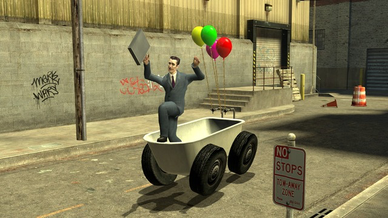

talia ducat
ENGL 348
Stephanie Bolster
February 23rd, 2025
Lovers' Sandbox: An Investigation into the Art of Digital Poetry
In finding different and unique ways to merge the boundaries between the digital and literary worlds, my work in this project investigates how poetry can both create a digital environment in content and enter a digital environment itself in form. Web-pages, videos, audios, videogames, and a multitude of other forms of digital poetry can be seen as ever-evolving methods of writing and displaying literary work in our increasingly technological world. For this project, I chose to engage with different strategies for digital poetry as research before embarking on my own writing. This investigation predominately featured James Ardis's poetry in the form of video game strategy guides, popular social media poetry by user Sotce, and video poems by Young Hae-Chang Heavy Industries. Next, I aimed to write poems that, on the level of content, construct and operate within a digital environment. For me, this meant imagining a speaker entering a digital world similar to an open-exploratory video game and using this realm as a means of interrogating topics of interpersonal connections, isolation, love, and apocalypse. As my experience in videogames mainly stems from growing up in the early 2000s, I drew from quest-based adventure games such as Poptropica, early ‘sandbox’ games––referring to a game with no set objectives that allow players to freely explore–– such as Garry’s Mod, and web-browser game sites such as GirlsGoGames.com. With this in mind, I wanted to engage with the aesthetic of early web nostalgia and find a format that allows 'readers'––or, players, perhaps––to engage more directly, intimately, and playfully with the literary work.
Fig. 1. Poptropica, my own short playthrough example, 2025.
Fig. 2. GirlsGoGames.com, screencapture sourced from gurlworld.com, Jenny O’Connor, 2023.
Fig. 3. Garry’s Mod, screencapture from Steam, 2025.
James Adris’s thesis I Live Peacefully in a Video Game World examines how intimacy and social behaviour form in corners of the internet that are typically considered impersonal or passive. I Live reimagines Youtube videos, their comment sections, video game strategy guides, and their patch notes as humorous conceptual poetry. Adris’s pieces successfully build a complex and meaningful videogame world that includes recurring characters, scenery, and functions, and is constructed piecemeal by each poem, as building blocks, thoughtfully placed upon the previous one. “Part 1” features written YouTube video titles such as “I TIME TRAVEL AND UNBOX YOUR CHILDHOOD NINTENDO GAMECUBE,” and their comments, where user “Jared Twothousandandlate”––a recurring character in the Nintendo Gamecube discussions––writes, as of one day ago, “I am very aware of the Nintendo Gamecube and I’m very aware of you and your nintendo gamecube [...] I’m deeply concerned about the future of your legs, power cord, starter memory card, the console in the standard purple and a standard black lunchbox handle with the exposed derpy tongue of a pet” (5). The speaker’s integration of videogame and interpersonal elements in this comment illustrates the forging of intimate connection through the common ground of technology.Further to this idea, the polyphony of YouTube commentor voices describe and unwaveringly accept the unusual circumstances of the world through what they saw or experienced from the video, which is not included in the poems, and thereby their depictions of reality are what form the reader’s own understanding of the narrative. In this manner, the reader is placed in a position alongside the commenters as if having entered their mindsets, their dialogues, and their world. Thus, as the reader enters this digital world alongside the speaker, they, too, learn to navigate the videogame world, the comment sections, and the connections created between the ‘characters’. The form that Adris creates for certain poems in this collection is a unique representation of digital worlds, exploring not only the layout of a YouTube comment section, but going further by constructing a recreation of video game strategy guides using keyboard characters to identify different videogame features and separations of concepts, as seen in Fig. 4 below. For my work, I investigated the digital environments Adris chose to work with––how they are represented through form on the page, what diction choices construct the ‘digital’ sensation in each poem, and, content-wise, how the poems successfully navigate social behaviour and intimacy while staying true to their videogame storyline. I took direct inspiration from Ardis’s representations of YouTube comment sections for “DAY IN THE LIFE OF A POST-OFFICE WORKER (POST-OFFICE SIMULATOR PLAYTHROUGH)” and went on to create my own form of a poetic online-space representation in “MISTY MARROWSTONE MALL: COMMON ROOM”.
Fig. 4. Excerpt from James Adris’s I Live Peacefully in a Videogame World, page 44, 2016.
Young Hae-Chang Heavy Industries (YHCHI) is a Seoul-based art collective consisting of Young-Hae Chang and Marc Voge whose work often consists of text-based poetry animation composed in Adobe Flash which is synchronized to an original musical score. Their digital poetry is characterized by speed, minimalist design, and the “Monaco” font, all of which are used to address social and political issues, especially as they relate to Korea.
Fig. 4. Young-Hae Chang Industries, THE EXPERIMENT IS DEMOCRACY. FASCISM IS THE CONTROL. Accessed February 2025.
Fig. 5. Sotce, “i want my life to be full of Great Moments”, 2022, Instagram.
Through my research, I took note of different methods of integrating technology and poetry and how these strategies increase the accessibility and uniqueness of a piece, as well as how they push the genre of digital poetry further.I wanted to construct an ongoing narrative through my poems, noting how both Ardis and YHCHI weave clear stories in their pieces, which I decided would all take place inside of a ‘videogame world’ by imagining what it would be like to live inside one of the exploratory, adventure games that I was inspired by, such as Poptropica or Garry’s Mod. The world of Lovers’ Sandbox is post-apocalyptic, adventure-based, and mysterious; it highlights specific locations as essential parts of the digital environment in order to ‘world-build’ and create a sense of an ‘open-world’ game. I took note of videogame terminology that I was familiar with, as well as some used in Adris’s work, in order to thoughtfully construct the digital ‘feeling’ in my poems without being overly direct (eg. inventory, dialogue, rendered, etc.). The narrative follows two characters with an implied ongoing romantic connection living inside of a videogame. They must navigate a post-apocalyptic scene, travelling from location to location and exploring this ‘open’, sandbox-style digital world. Meanwhile, I found the femininity and relatability of Sotce’s work as well as the cute and nostalgic nature of web-browser games such as GirlsGoGames.com to be most alluring and congruent with the aesthetics of my writing. I decided to primarily incorporate these aesthetics in the visual part of Lovers’ Sandbox,which can be seen where the poetry is hosted on an interactive, early-web-nostalgic web-page, which was created with the help of collaborator Noah Depelteau. The unique graphics and mechanics of this website aim to recreate certain nostalgic elements of early-web browsing and gaming. Ultimately, the contrast of these more ‘cute’ or ‘pretty’ elements alongside the ‘apocalyptic’ and ‘adventure’ videogame-esque elements creates a unique balance which captures what I think is most effective from each work that I engaged with in my research. Overall, I currently look at Lovers’ Sandbox as the first step in my journey of merging technology and poetry through my work––perhaps it is a ‘proof of concept’ for a larger digital poetry project, as this idea could certainly be pushed further, perfected, and expanded in new directions. As my poetic and technological skills develop, I would be interested in creating an expanded poetic videogame universe with characters, storylines, and settings that is even more interactive and game-like. However, as it currently exists, this project has examined the strategies of digital and poetic convergence by interrogating multiple different literary works dating from when the Internet began until present day in order to identify key critical elements that allow technology to amplify poetry and vice versa.
see bibliography